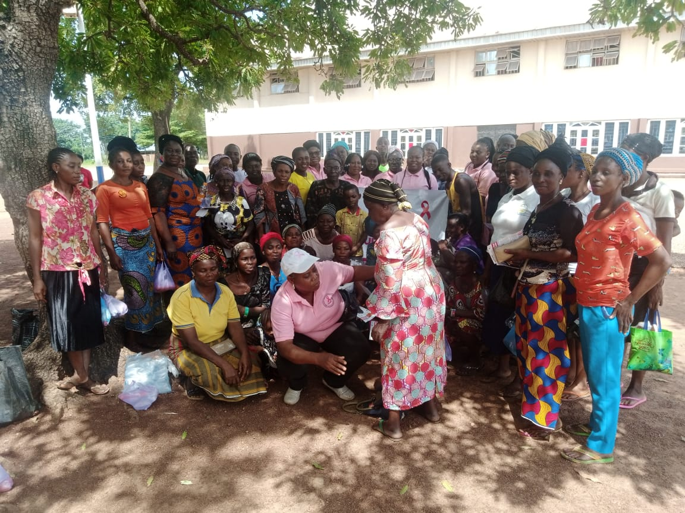

Our History: How It All Began
Published: 11 October 2025 · Author: BBCSI

What is now known as the Benue Breast Cancer Support Initiative (BBCSI) originally began in June 2016 because of the convergence of the following factors:
- The adjustment to the calendar for the Annual Health Fair organized by the Mutual Union of Tiv in America (MUTA) under the auspices of President Joseph Doo Gar. This adjustment made it possible for our founder Professor (Emerita) Stevina Evuleocha-Ugbah in the company of her daughter Teni Ugbah to participate in the 2016 MUTA Health Fair during which the idea of a breast cancer support group emerged.
- Mrs. Ngomon Gar’s diligence in assisting with the location of breast cancer survivors—twelve of whom showed up on the last day of the fair.
- The generous donation of prosthetics, bras and camisoles by Mrs. Jennifer Milne, Co-Owner of Marzel’s in Pleasanton, CA USA. Marzel’s specializes in breast health care and prosthetics.
Three years post diagnosis, Stevina sought an outlet to use her breast cancer journey to make a difference. Unsure how to go about it, a request to edit a fundraising letter for the MUTA Health Fair in 2016 presented an opportunity to ask if the calendar could be adjusted to accommodate MUTA members who were educators in a quarter system.
Once that calendar adjustment was made, a phone call to Marzel’s yielded a suitcase full of prosthetics, bras and camisoles which were distributed at the first meeting during the fair. At that meeting 12 breast cancer survivors showed up in the company of Mrs. Hannah Tiohn.
We agreed to start a support group to check in on each other and begin awareness campaigns every October. We adopted Benue Breast Cancer Survivors Support Group (BBCSG) as our name, and designated 3 positions of Chairperson, Secretary and Treasurer. Our first campaign was in Gboko in 2016. We maintained this routine until the COVID-19 pandemic changed everything. We owe a debt of gratitude to Professor David Iornem, Trustee and Friend of BBCSI for taking it upon himself to advertise our activities in The New Times (TNT) newspaper while Hon. Kohol Iornem helped arrange for our jingles.
We moved our campaign online in 2020 & 2021 and invited Hon. Kohol Iornem (our moderator & partner for Life) on board. It was also in 2020 that BBCSI began a micro loan program funded with the founder’s birthday donations to assist members with cottage businesses or emergency financial needs.
In 2023, 2 major developments affected our operation. We registered as a nonprofit with the Corporate Affairs Commission (CAC) of Nigeria, and our name became Benue Breast Cancer Support Initiative (BBCSI). One of our members in need of cancer treatment approached us for financial assistance. In that moment the idea of a long-term loan program for cancer treatment was born. Subsequently, it became clear that our members were most in need of assistance for treatment and did not borrow as much from the micro loan program. In June 2025, we discontinued the micro loan program in favor of the long term loan program that assists members with treatment subsidies.